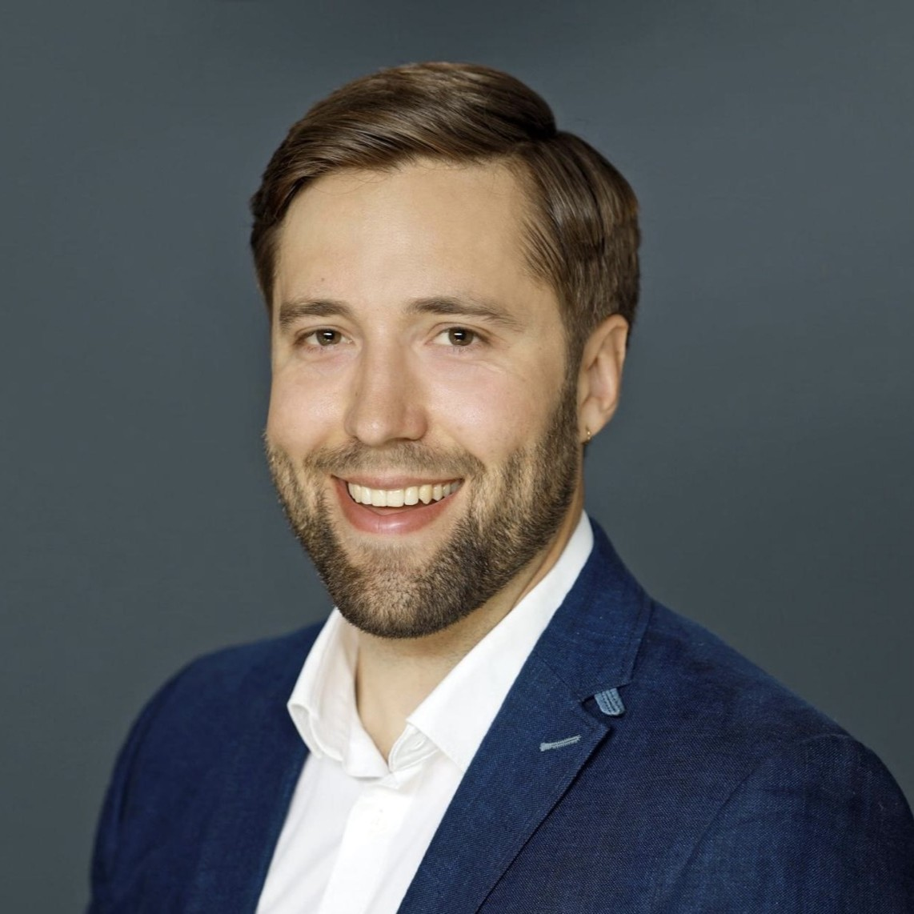

Hello — I'm Jan Kamm.
This page provides a short overview of my background, how I work in practice,
and what I am looking for in my next professional chapter in Switzerland.
Profile at a Glance
- Analytical & technical foundation: M.Sc. in Physics from Heidelberg University (grade 1.2, top 5%), with a Master's thesis (graded 1.0) at the German Cancer Research Center (DKFZ) on high-frequency electronics for 7-Tesla MRI scanners
- Management consultant (ESG & Climate Risk): Promoted twice in under two years (Associate → Senior Associate → Assistant Manager) advising financial institutions at KPMG
- Renewable energy project developer: Developed utility-scale solar farms (25–140 MW) and evaluated Battery Energy Storage Systems (BESS) co-location alongside Agri-PV concepts from site acquisition and permitting to pre-construction at Verbund AG
- Clear communicator & negotiator: State-certified mediator (120+ hours, German Mediation Act) skilled at guiding complex multi-stakeholder negotiations with structure and empathy
- Practical AI & workflow builder: Designs repeatable LLM and agentic AI workflows for regulatory research, contract analysis, and full-stack Python automation tools
- Entrepreneurial initiative: Founded and grew a beach volleyball community from 20 people into an active network of 1,000+ members
Professional Background
During my Physics studies at Heidelberg University, I specialized in electrical engineering, scientific programming in Python, and medical physics, completing my Master's thesis at the German Cancer Research Center (DKFZ) on high-frequency electronics for next-generation 7T MRI scanners. Alongside my technical studies, I completed economics coursework, a Mini MBA, and training as a state-certified mediator — driven by an early interest in combining rigorous analytical thinking with human communication and business execution.
After graduating, I began my career as an ESG Management Consultant at KPMG in Berlin, where I was promoted twice within 22 months to Assistant Manager. Our team advised banks on integrating emerging climate and environmental risks into their risk management frameworks (including ECB climate-risk guidelines, BaFin MaRisk, CSRD/ESRS, and TCFD) and moderated KPMG's global banking ESG risk calls.
In one pivotal engagement shortly after the ECB introduced its initial climate-risk requirements — when no established industry best practices existed yet — two colleagues and I synthesized methodologies from scientific literature, NGO publications, and supervisory reports to build a comprehensive quantitative ESG risk evaluation model from the ground up, which subsequently became KPMG's blueprint for other banks.
Consulting also taught me how to stay calm under pressure and manage senior stakeholder expectations transparently: communicating early when complex analyses needed more time, explaining the trade-offs clearly, and ensuring executives always felt well supported.
Over time, I felt a strong desire to see the tangible, physical impact of my work more directly. Following a sabbatical, I transitioned into renewable energy project development at Verbund AG, where I developed utility-scale solar PV projects (25–140 MW) and evaluated Battery Energy Storage Systems (BESS) co-location as well as Agri-PV concepts, managing projects from greenfield site identification (QGIS) and land lease negotiations to municipal permitting and grid connection.
What I valued most was the interplay between technical coordination, contract structuring, and hands-on stakeholder diplomacy. For instance, by applying mediation principles in numerous face-to-face meetings, I negotiated a complex infrastructure-sharing agreement with a key landowner who wanted to co-utilize our grid infrastructure for her own smaller solar installation, aligning internal management, legal counsel, and grid authorities. On another project facing a stalled municipal permit, we engaged local politicians across party lines and met with local representatives on-site (even in a council member's garden on a weekend) to build trust and successfully unblock the approval.
At Verbund, I also designed repeatable LLM-assisted workflows for the team to analyze lengthy legal contracts and zoning plans, conduct regulatory research, and prepare structured decision memos — while shifting my own working style from academic perfectionism toward pragmatic, high-impact prioritization.
Beyond my corporate roles, I enjoy taking ownership of hands-on technical and entrepreneurial projects. Over four years in Berlin, I founded and grew a beach volleyball community from roughly 20 players into an active network of more than 1,000 participants, organizing weekly games and events and eventually turning it into a small side business with two fellow members.
More recently, between January and September 2026, I fulfilled a long-standing personal engineering goal: converting a commercial van end-to-end into a self-sufficient off-grid campervan. I designed and wired the 12V/230V LiFePO4 battery and solar electrical system, managed procurement and budgeting, carried out the carpentry and finishing work, and used agentic AI as a technical sparring partner throughout the build. Since relocating to Zurich, I have also been building local full-stack Python applications using agentic AI workflows (FastAPI, Selenium, and LLM orchestration) for market research, Zurich event discovery, and document automation.
My Next Chapter in Zurich
Originally from Munich, I have always felt a strong connection to the Alpine region. After several rewarding years in Berlin, I relocated to Zurich to live closer to the mountains and build my long-term future in Switzerland. Having spent five years of my childhood in New Zealand and traveled extensively across different continents, I adapt quickly and naturally to new environments.
With my campervan project completed and my move to Zurich settled, I am available immediately (or on a flexible start date) for a new challenge in project management, management/sustainability consulting, or renewable energy & infrastructure in the Greater Zurich Area.
If you feel my combination of analytical depth, stakeholder leadership, and hands-on execution could be a great fit for your team, I would be delighted to hear from you.
Contact
A detailed overview of my professional experience and references can be provided upon request.